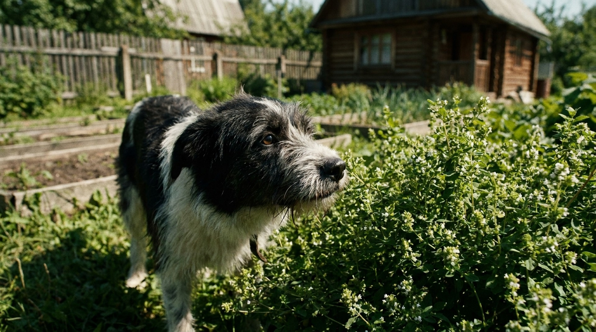

Дача — рай для собаки: пространство, запахи, трава. И одновременно — концентрация токсинов. Многие растения, привычные для российского огорода и сада, опасны для собак. Некоторые смертельны даже в небольших количествах. Прежде чем выпустить собаку на участок в первый раз в сезоне — убедитесь, что вы знаете, что там растёт.
🐾 Здоровье питомца под контролем
AI-ветеринар, дневник здоровья и персональные советы для вашего питомца — установите AnimaLife бесплатно.
🐾 Понравился разбор?
Подпишитесь на канал — каждый день разбираем по одному тревожному симптому у кошек и собак: что в пределах нормы, а когда пора к врачу. Подпишитесь, чтобы не пропустить разбор, который может спасти здоровье вашего питомца.
Собаки исследуют мир носом и ртом. На даче всё незнакомо и пахнет интересно. Щенки особенно склонны жевать всё подряд. Взрослые собаки могут целенаправленно искать траву при тошноте или дискомфорте в животе — это инстинктивное поведение. Проблема в том, что отличать съедобное от несъедобного они не умеют.
Важно: токсичными могут быть не только листья, но и плоды, кора, луковицы, корни и семена. Иногда самая опасная часть — та, которую никто не думает убирать (например, луковицы тюльпанов в земле).
1. Безвременник осенний (Colchicum autumnale)
Любимое декоративное растение. Все части содержат колхицин — алкалоид, нарушающий деление клеток. Несколько граммов цветка или луковицы могут убить собаку среднего размера. Симптомы: тяжёлая рвота, диарея с кровью, нарушение дыхания, нервные нарушения. Антидота нет.
2. Тисс (Taxus baccata)
Декоративное хвойное дерево. Все части, кроме красной мякоти ягод, содержат таксины — быстродействующие кардиотоксины. Смерть возможна без видимых предвестников — остановка сердца за несколько часов. Красивые красные ягоды привлекают собак.
3. Олеандр (Nerium oleander)
В Средней полосе России — горшечное растение, которое выносят на дачу летом. Все части смертельно опасны. Гликозиды олеандрина вызывают острую сердечную недостаточность. Достаточно нескольких листьев.
4. Белладонна (Atropa belladonna) и дурман (Datura stramonium)
Встречаются как сорняки. Алкалоиды атропиновой группы: расширение зрачков, тахикардия, галлюцинации, судороги, кома. Все части токсичны.
5. Вороний глаз (Paris quadrifolia)
Лесное растение по соседству с участком. Блестящие чёрные ягоды привлекают собак. Отравление: рвота, диарея, нарушение сердечного ритма.
6. Нарциссы и тюльпаны (луковицы)
Луковицы содержат токсичные алкалоиды и гликозиды. Симптомы: рвота, диарея, боль в животе, нарушение дыхания. Листья менее токсичны, луковицы — значительно опаснее.
7. Ландыш (Convallaria majalis)
Все части, включая воду в вазе. Сердечные гликозиды вызывают аритмию, рвоту, нарушение зрения, нервные симптомы. Типичный дачный сорняк.
8. Борщевик (Heracleum sosnowskyi)
Опасен контактно — фуранокумарины при попадании на кожу и воздействии солнца вызывают тяжёлые ожоги. Если собака побегала в зарослях борщевика, немедленно вымойте её и уберите с солнца.
9. Паслён (Solanum nigrum и S. dulcamara)
Сорняк на огородах. Незрелые ягоды особенно опасны — соланин. Симптомы: рвота, слабость, нарушение дыхания.
10. Бузина (Sambucus) — незрелые плоды и листья
Зрелые чёрные ягоды менее токсичны, незрелые и листья содержат цианогенные гликозиды. При поедании большого количества — кишечные симптомы, вялость.
11. Хоста (Hosta spp.)
Популярное декоративное растение в тени. Токсичность — умеренная, вызывает рвоту, диарею, апатию.
12. Гортензия (Hydrangea)
Листья и цветы содержат цианогенные соединения. При поедании небольшого количества — лёгкие кишечные симптомы.
13. Ревень (Rheum) — листья
Черешки безопасны, листья содержат щавелевую кислоту в высокой концентрации. При поедании — проблемы с почками при регулярном контакте.
14. Лютик (Ranunculus)
Распространённый луговой сорняк. Протоанемонин — раздражает слизистые рта и ЖКТ. Тяжёлое отравление возможно при поедании большого количества.
15. Дельфиниум (Delphinium)
Декоративный многолетник. Все части токсичны — алкалоиды аконитовой группы. Симптомы от умеренных до тяжёлых в зависимости от дозы.
Симптомы зависят от типа токсина, но есть общие тревожные признаки:
Кардиотоксичные растения (тисс, олеандр, ландыш) могут давать минимальные внешние признаки, а потом — внезапную остановку сердца. Поэтому при любом подозрении на поедание опасного растения не ждите симптомов.
Аудит участка — пройдите по всей территории весной, до приезда собаки. Определите все декоративные растения. Если не знаете название — сфотографируйте и определите через приложение (iNaturalist, PlantNet).
Физические ограждения — клумбы с опасными растениями огородите невысоким заборчиком или сеткой. Для щенков достаточно 30-40 см, для взрослых собак — 60-70 см.
Луковицы — тюльпаны, нарциссы, гиацинты: при перекопке осенью убирайте луковицы в недоступное место. Собаки охотно роются в земле.
Надзор в первые визиты — не оставляйте собаку на участке без присмотра в первые 2-3 визита, пока не убедились, что она не интересуется растениями.
Команда «Фу» или «Оставь» — надёжно отработанная команда запрета — важный элемент безопасности на участке.
Собака что-то съела на даче и вы не уверены, насколько это опасно? Напишите в AnimaLife — vet-AI оценит риск по симптомам и составу растения.
Спросить vet-AI в Telegram → · Спросить в MAX →
Томаты и картошка — можно ли собаке?
Зелёная ботва и незрелые плоды содержат соланин. Зрелые красные томаты в небольших количествах безопасны. Картофельная ботва — токсична, убирайте с грядок.
Чеснок и лук растут на огороде — опасны ли?
Да. Все растения рода Allium (лук, чеснок, черемша, лук-порей) содержат вещества, разрушающие эритроциты собаки. Регулярное поедание приводит к гемолитической анемии. Сырые луковицы опаснее варёных, но и термически обработанные небезопасны.
Если собака съела лист одуванчика — это опасно?
Нет. Одуванчик не токсичен для собак. Некоторые собаки едят его специально, и это нормально.
Нужно ли ехать в клинику, если симптомов нет?
Зависит от растения. При поедании тисса, олеандра, ландыша — немедленно, не дожидаясь симптомов. При поедании умеренно токсичных растений — звоните в клинику, они скажут режим наблюдения.